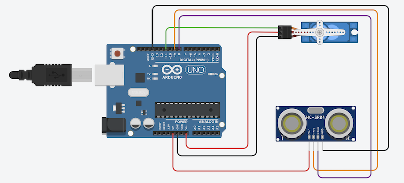
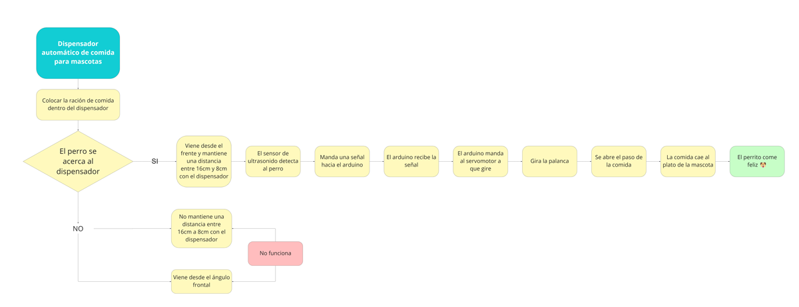

Proyecto final:
Dispensador automático de comida para mascotas
Para nuestro trabajo final, decidimos hacer un dispensador automático de comida para mascotas. Sé que parece difícil imaginar que podríamos hacer esto, y al inicio mis amigas y yo también pensamos lo mismo, pero conforme pasaban las clases íbamos aprendiendo más y entiendo mejor todo. Aquí te explicamos cómo fue todo nuestro proceso.
Antes que todo, te presento a mi TEAM:Natsumi Yano (Yo)
Celeste Pariona
Vivian Echegaray
Ana Paula Carranza
Ahora sí, comenzamos con nuestro proyecto:
*Esta fue nuestra referencia
-
PROTOTIPO 3D
Realizamos nuestro case del proyecto en la plataforma de Tinkercad. Decidimos colocar el nombre de "Winnie" en uno de los lados del case, ya que el nombre de la perrita de Vivian.

Prototipo 3D
Si deseas ver el prototipo en Tinkercad, haz click aquí
-
Simulación del circuito
Realizamos la simulación de nuestro circuito en la misma plataforma de Tinkercad,Para ello, utilizamos un sensor de distancia ultrasónico, un Microservomotor y un Arduino UNO R3.
Simulación del circuito
Si deseas ver el circuito en Tinkercad, haz click aquí
-
Diagrama de flujo
Hicimos un diagrama de flujo, para conocer más a profundidad el paso a paso de lo que sucede en nuestro proyecto para que este cumpla con su objetivo.
Diagrama de flujo del proyecto
-
Ensamblaje
Para esta reunión, Celeste, Ana y yo nos reunimos en mi casa, y Vivian estuvo conectadas por videollamada con nosotras, ya que se encuentra en Chimbote.
Para esta reunión, ya teníamos todos los materiales, así que, nos dedicamos a armar todo el circuito, ponerle la programación a la placa, armar todo el case donde iría el circuito y lo probamos. Nos sentimos muy felices, porque tuvimos mucho intentos fallidos donde no funcionaba el proyecto, pero al final el problema era que algunos jumpers no funcionaban, y al cambiarlos todo funcionó como esperábamos. Nos emocionamos mucho al ver que todo funcionó correctamente.
Hicimos un pequeño video recopilatorio de todo lo que avanzamos en esa reunión, esperamos que les guste :)
Simulación del circuito